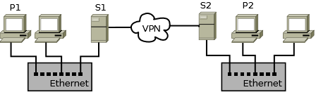

Когда всё готово для организации резервного копирования (продумана схема, настроен rsync-клиент и сервер, составлен перечень требующих архивации файлов и каталогов на каждой рабочей станции), неплохо бы всё это дело автоматизировать. Действительно, не заводить же себе будильник и запускать на каждой станции команду? :-) В этой статье я расскажу о том, как приготовить простой bash-скрипт определённой универсальности, который можно будет разместить на всех рабочих станциях и серверах данные с которых подлежат резервному копированию. После размещения файла скрипта вам останется лишь сообщить планировщику (я использую cron для решения подобных задач) расписание запуска и спокойно курить в сторонке, пока все участники вашей сети будут заботиться сами о себе. То есть, о ваших данных, конечно же!
Схема сети
Немного вернёмся в прошлое и рассмотрим схему моей сети, в которой работает описываемый в этой статье скрипт. В приводимом примере есть два Ethernet-сегмента, связанные между собой более медленным каналом связи через OpenVPN. Сетевой доступ извне полностью ограничен, поэтому возможность использовать в rsync ssh-туннель не используется. Между Ethernet-сегментами всю работу по шифрованию трафика берёт на себя VPN-туннель.

Итак, в каждом сегменте есть сервер и несколько рабочих станций. Количество рабочих станций в принципе значения не имеет, хотя и изображено у меня только две. Схема резервного копирования достаточно проста: все рабочие станции каждого сегмента сети выполняют backup на «свои» сервера, который в свою очередь обмениваются копиями данных между собой.
Разделяй и властвуй
Жизнь давно научила меня при реализации подобных решений на bash (да и не только), не засовывать всё в один файл. Очень важно на этапе реализации чётко разделить программную часть скрипта и его изменяющуюся от системы к системе часть. Очевидно, что перечень архивируемых каталогов и файлов, а также адрес назначения копирования и будут той самой изменяющейся частью. А вот сам «движок» будет везде одинаков, что позволит в будущем, дополнив ваш скрипт новыми возможностями, бездумно скопировать его на все рабочие станции и сервера, не затронув при этом списка копируемых файлов и каталогов и целевого сервера.
Файл конфигурации
Громковато сказано, но по-другому назвать это никак не могу. Итак, выше мы определились, что перечень копируемых файлов и каталогов, а также путь к серверу мы будем хранить в отдельном файле. Этот файл представляет собой обычный bash-скрипт, который будет выполняться из «основного» как только это понадобится. В нём определён адрес сервера и перечень подлежащих копированию файлов в виде массива. Выглядеть это может примерно так:
# rsyncb configuration file
# @version 10.5.4
# Destination URL to sync
# This URL must be URl of rsync MODULE
# Example: rsync://hostname/module_name
DSTURL=rsync://myserver/backups
# Source files, directories to sync
SRCDIRS=(\
/etc \
/usr/local \
/var/log \
/home \
)
# Filenames patterns to exclude
EXCLUDEPATTERNS=(\
*.[mM][pP]3 \
*.[mM]3[uU] \
*.[wW][mM][aA] \
*.[aA][vV][iI] \
*.swp \
)
В переменной DSTURL хранится путь к rsync-серверу и модулю, в который будет производиться архивация данных. Переменная SRCDIRS представляет собой массив со списком каталогов и, возможно, файлов подлежащих копированию. Обратите внимание, что пути к каталогам не заканчиваются слешами!. В массиве EXCLUDEPATTERNS перечислены шаблоны имён файлов, которые rsync будет пропускать при выполнении синхронизации. Сам файл я разместил в /usr/local/etc/rsyncb.conf.
Скрипт
А вот и сам скрипт, выполняющий всю работу.
#!/bin/bash
#
# Performs rsync from this host to another
# Configuration must be placed into /usr/local/etc/rsyncb.conf
#
# @version 10.5.4
# Проверяем, доступен ли файл конфигурации для чтения
[ ! -r /usr/local/etc/rsyncb.conf ] && {
echo "Configuration file not found"
exit 1
}
# Выполняем файл конфигурации
. /usr/local/etc/rsyncb.conf
# Если в имени этого хоста нет фрагмента "server"
# (у меня все сервера имеют в имени такой суффикс),
# то есть, иными словами ЕСЛИ ЭТОТ ХОСТ - НЕ СЕРВЕР,
# то в модуле назначения нам нужно будет создать каталог с именем этого хоста.
# При синхронизации серверов между собой, такого делать не требуется.
{ echo ${HOSTNAME} | grep -vq server; } && DSTURL=${DSTURL}/${HOSTNAME}
# Определяем, доступна ли rsync
RSYNCBIN=`which rsync`
[ ! -x ${RSYNCBIN} ] && {
echo "rsync not found"
exit 1
}
# Определяем параметры, которые будут передаваться rsync
RSYNCFLAGS="-vau"
# При синхронизации серверов дополнительно
# будет использоваться параметр -R
{ echo ${HOSTNAME} | grep -vq server; } && RSYNCFLAGS=${RSYNCFLAGS}R
# Формируем значение параметра --exclude для rsync
EXCLUDESTR=""
for PATTERN in ${EXCLUDEPATTERNS[@]}
do
EXCLUDESTR="${EXCLUDESTR} --exclude ${PATTERN}"
done
# Поехали!
for DIR in ${SRCDIRS[@]}
do
echo "Start rsync ${DIR}"
${RSYNCBIN} ${RSYNCFLAGS} ${EXCLUDESTR} ${DIR} ${DSTURL}
echo "Finish rsync ${DIR}"
done
Скрипт предельно прост. Логику работы я попытался описать в комментариях. Обратите внимание на то, что для синхронизации серверов между собой, во-первых, не создаются дополнительные каталоги в целевом rsync-модуле, а во-вторых, используется дополнительный параметр -R, указывающий rsync использовать относительные имена файлов при копировании.
Если вдруг вам понадобятся исходники, то взять можно здесь
Установка скрипта
Всё, что осталось сделать — это разместить файлы скрипта на рабочих станциях и серверах и создать задание для cron. Файл конфигурации, как было сказано выше, я рекомендую разместить в /usr/local/etc/rscynb.conf, а файл скрипта — в /usr/local/bin/rsyncb.sh. Не забудьте установить бит, разрешающий запуск скрипта:
# chmod 0755 /usr/local/bin/rsyncb.sh
После того, как всё установлено и настроено обязательно произведите пробный запуск. Если всё пройдёт успешно, то можно добавить задание в cron:
# sudo crontab -e
0 2 * * * /usr/local/bin/rsyncb.sh
В приведённом примере запуск скрипта будет выполняться раз в сутки, в два часа ночи. Как уже говорилось выше, не делайте одинаковым время запуска скрипта на всех системах! Особенно это касается синхронизации между собой серверов.
Замечания
Если в вашей сети несколько или более чем несколько участвующих в процессе резервного копирования рабочих станций, то неплохо бы задуматься о том, чтобы не запускать копирование одновременно со всех них. Не забывайте, что ресурсы серверов не резиновые и на них могут рассчитывать другие процессы и пользователи. Таким образом, постарайтесь равномерно распределить время запуска backup-скриптов на ваших рабочих станциях.
To do
В предлагаемой реализации резервного копирования нет «обратной связи». То есть, если на какой-то рабочей станции удаляется файл, то на сервере он продолжает храниться. Это одновременно хорошо и плохо. Хорошо потому, что вспомнив через год о каком-то нужном вам файле, который вы в порыве или нечаянно удалили, вы всегда сможете вернуть его обратно. Не совсем приятная сторона такого подхода заключается в том, что свободное дисковое пространство отнюдь не резиновое и настанет тот день или ночь, когда копировать новый данные будет уже некуда. Поэтому неплохо бы продумать и реализовать механизм удаления устаревших резервных копий. Как самый простой вариант: например, раз в месяц запускать отдельный скрипт-"чистильщик", который и будет удалять все несуществующие на рабочей станции копии данных. Ну а в идеале, конечно, нужно чтобы перед удалением неактуальных копий сперва выполнялась проверка на предмет времени последнего изменения копии. Это нужно для того, чтобы не получилось следующее. Запуск процесса «чистки» у вас запланирован на 1 число каждого месяца, а 31-го декабря с бокалом водки в руке вы на рабочей станции удаляете /etc или что-нибудь в этом духе. А второго января будет уже поздно пить «Боржоми»... Но если скрипт будет не тупо удалять все неактуальные копи, а сперва просматривать время последнего доступа к файлу, отсчитывать, скажем, месяц, и лишь тогда удалять — вот это будет самое оно.